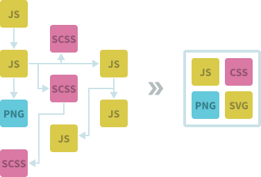

Co je to Webpack
V první části tohoto tutoriálu se dozvíte, co to Webpack vůbec je a k čemu slouží.
Webpack je v podstatě nástroj, který slouží k sestavování webových aplikací. Je určen hlavně pro JavaScript, ale můžeme s jeho pomocí zpracovávat i jiné typy souborů. Když například děláme nějaký web a jsme již pokročilí, tak nechceme psát všechno do jednoho souboru, ale chceme mít více souborů, které potom pro produkci sloučíme dohromady. Také můžeme třeba chtít používat nějaký preprocesor pro psaní CSS stylů, minifikovat soubory aby měli menší velikost, a tak podobně. S pomocí Webpacku si můžeme dopodrobna nakonfigurovat, jak by se naše webová aplikace měla sestavit.
Jak Webpack funguje
Protože je Webpack velmi konfigurovatelný, nemusí být jeho nastavování vůbec nic jednoduchého. Může tedy hodně lidí odradit od toho, aby se jej naučili. Já sám když jsem se jej zkoušel naučit poprvé, tak jsem od toho nakonec upustil a kód pro produkci jsem si raději stále sestavoval ručně, což bylo často dost otravné. Myšlenka Webpacku je však jednoduchá. Vezme různé soubory, zpracuje je a sloučí je do menší skupiny souborů, které jsou lepší pro produkční užití.
Jak jsem již psal, Webpack je určen hlavně pro JavaScript. V oficiální dokumentaci je napsáno, že se v základu jedná o module bundler (nástroj k zabalení JS modulů do jednoho souboru) pro moderní JavaScript aplikace. Webpack v základu rozumí jen JavaScript a JSON souborům. Podporu pro další typy souborů můžeme přidat prostřednictvím loaderů, o kterých se později v tutoriálu dozvíte. Webpack naši aplikaci začíná zpracovávat z nějakého vstupního bodu (popřípadě i více vstupních bodů), který představuje JavaScript soubor. Webpack tento JavaScript soubor projede a podívá se, jestli se v něm neimportují nějaké JavaScript moduly, které také rekurzivně projede. Vytváří si takový graf závislostí a sloučí JavaScript soubory do jednoho. Také provádí tree shaking (když je spuštěn v módu pro produkci), což je technika pro odstraňování nepoužitého JavaScript kódu. Co se týká JavaScriptu, tak je to hodně užitečný nástroj. Pokud ale potřebujete zpracovat třeba hlavně CSS styly, tak je možná lepší použít něco jiného. Tím ale netvrdím že byste pro to Webpack neměli používat.
Tato část vám jen velmi stručně vysvětlila, co to Webpack je. V příští části si Webpack nainstalujeme a začneme předělávat jednoduchou webovou aplikaci tak, aby jej používala.